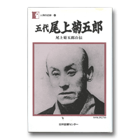

Books for Becoming Better Acquainted with Otowaya
Index > Onoe Kikugoro, Godai Onoe Kikugoro: Onoe Kikugoro Jiden (Autobiography of Onoe Kikugoro V)
Onoe Kikugoro, Godai Onoe Kikugoro: Onoe Kikugoro Jiden (Autobiography of Onoe Kikugoro V)
Nihon Tosho Senta, 1997Tales of the Kabuki Theatre from the Meiji Era
The foundations for the Kabuki theatre as it exists today were laid during the Meiji era. This book offers a vivid portrayal of Kikugoro V, who went in search of a new style of Kabuki for a new era while competing with the other greater Kabuki actor of the day, Ichikawa Danjuro IX.
The first section deals with performing techniques and begins with a description of Benten Kozo, the drama with which Kikugoro V made his name. The process that led to the creation of this new work is brought to light, beginning with the moment when he brought along a picture book to show to Kawatake Mokuami. A detailed description is provided of how the wigs, costumes and stage props were devised. This information throws light on how the performance style distinctively associated with Kikugoro V came into being.
The author gives a detailed description of the style of Kikugoro III as manifest in the play Yotsuya Kaidan (The Ghost of Yotsuya) and of the difficulties leading up to the revival of Modoribashi. In the chapter entitled Butaijo no Kenkyu (Stage Research), he shows how distinctions were made in connection with the way that tenugui hand towels are held between the four social classes of samurai, artisans, tradesmen and farmers, between different eras, and between the two main different genres of Kabuki drama, jidaimono (historical dramas) and sewamono (dramas of contemporary life). In one episode he describes how he would take the greatest care with every single hand towel after using it on stage, carefully spraying it, stretching it and folding it, thus indicating the great care that he took in his handling of every item used during a performance.
In the second section, in which he describes his own personal history, he describes his life from birth and infancy through to the time when he collapsed with a stroke. The era moves from Edo Period into the Meiji era. Although this was a period of turbulent change, Kikugoro V shows how he continued to set great store in his everyday life by the sophisticated style of Edo.
For instance, he tells a story of how he hears about a fire in the neighbourhood but feels unable to see what's going on before going home and getting changed into a stylish quilted cloak. He is determined to look stylish and at his best at all times. It was plays in the sewamono genre treating affairs from contemporary life that crystallised the aesthetic of the merchant class of Edo in the form of Kabuki. These have now become classics in the Kabuki repertoire, and it was the task of Kikugoro V to create plays in this genre. We are able to sense the atmosphere of an age when the theatrical stage was at one with everyday life.
The first edition of this book was published by Jiji Shinposha in 1903 under the title of Onoe Kikugoro Jiden (Autobiography of Onoe Kikugoro V). The new edition with modern orthography can be easily acquired today in Volume 42 of Ningen no Kiroku (Human Records).
| ↑ TOP |
Copyright © Otowaya All Rights Reserved.